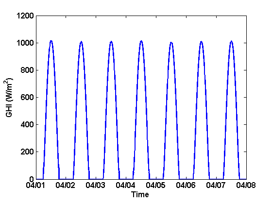

IneichenClearSkyModel
Generates the clear sky irradiance using Ineichen and Perez model 2002
Contents
Syntax
GHI = IneichenClearSkyModel(times,latitude,longitude,elevation,Lz);
Description
Function to generate the clear sky global horizontal irradiance for a given time period and location using the SoDa Linke Turbidity maps
Inputs
- times - matlab datenum (Example: datenum(2011,2,23) ), can be an array of times
- latitude - site latitude (decimal degrees)
- longitude - site longitude (decimal degrees) (negative for West)
- elevation - site elevation (meters)
- Lz - standard times zone meridian (120 for PST, 105 for MST, 90 CST, and 75 for EST). To find the time zone meridian, just take GMT offset and multiply by -15. (e.g. Eastern time is GMT -5hrs, so the meridian is (-5)*(-15) = 75 degrees.
- Linke Turbidity images in a folder ('LinkeTurbidity'), images obtained from (http://www.helioclim.org/linke/linke_helioserve.html)
Outputs
- GHI is an array of GHI values for each time in array times
Example
Generates the 1-minute GHI profile for Albuquerque for the first week in April, 2011.
times = datenum(2011,4,1):1/(24*60):datenum(2011,4,8); GHI=IneichenClearSkyModel(times, 35.04, -106.62, 1617, 105); plot(times, GHI,'LineWidth',2); datetick('x','mm/dd','keeplimits','keepticks'); set(gca,'FontSize',12,'FontWeight','bold'); ylabel('GHI (W/m^2)','FontSize',12,'FontWeight','bold'); xlabel('Time','FontSize',12,'FontWeight','bold');